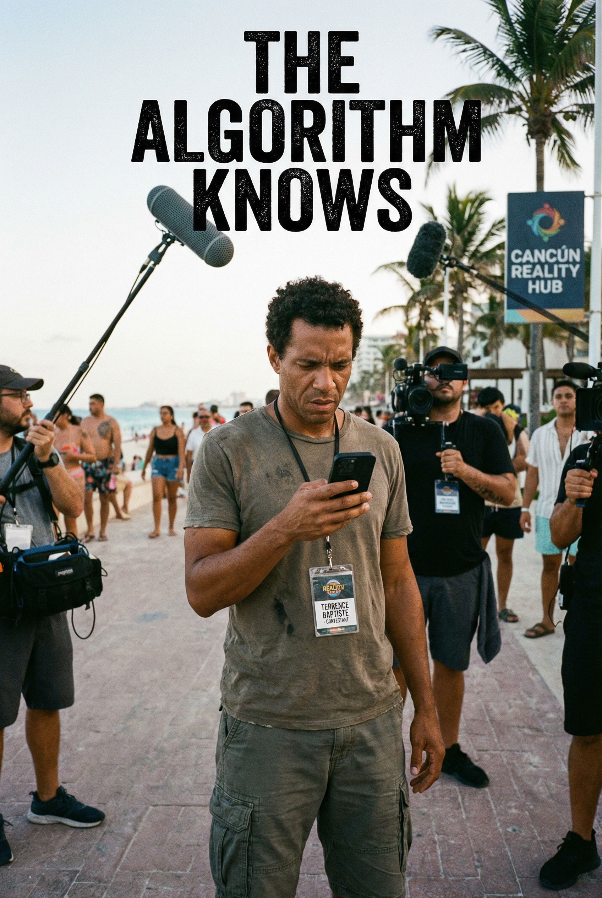

Mystery 3A: The Algorithm Knows
LIVEGran Horizonte Resort, Cancún | July 2025
Solomon Vance is dead. The EROS algorithm matched him with his killer. Can you untangle the secrets of reality TV's deadliest show?
Difficulty:
HARD
Players:
2-8
Time: 3-5
hours
In a reality show where an AI algorithm controls who you love, one contestant breaks the rules—and ends up dead. Terrence exposed the show's biggest secret: the "perfect algorithm" is fake. Someone killed him to protect either their shot at love, their reputation, or the show's $50M franchise. Only 6 had access \+ fingerprints \+ clear motives.
Open Case File